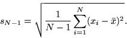
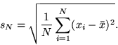
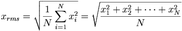

- Introduction
- Range
- Standard Deviation
- Root Mean Square
- Interquartile Range
- Median Absolute Deviation
- Trimmed Variance
Measures of Dispersion
While measures of central tendency are used to estimate "normal" values of a dataset, measures of dispersion are important for describing the spread of the data, or its variation around a central value. Two distinct samples may have the same mean or median, but completely different levels of variability, or vice versa. A proper description of a set of data should include both of these characteristics. There are various methods that can be used to measure the dispersion of a dataset, each with its own set of advantages and disadvantages.
Range
- Defined as the difference between the largest and smallest sample values.
- One of the simplest measures of variability to calculate.
- Depends only on extreme values and provides no information about how the remaining data is distributed.
Example: Find the range of global observed sea surface temperatures at each grid point over the time period December 1981 to the present.
| Locate Dataset and Variable |
|
| Find Maximum Value | |
| View Maximum Values |


|
| Find Minimum Values and Subtract from Maximum Values |
|
| View Range |

|
Standard Deviation
- The standard deviation is the square root of the sample variance.
- Defined so that it can be used to make inferences about the population variance.
- Calculated using the formula: 
- The values computed in the squared term, xi - xbar, are anomalies, which is discussed in another section.
- Not restricted to large sample datsets, compared to the root mean square anomaly discussed later in this section.
- Provides significant information into the distribution of data around the mean, approximating normality.
- The mean ± one standard deviation contains approximately
68% of the measurements in the series.
- The mean ± two standard deviations contains approximately 95% of the measurements in the series.
- The mean ± three standard deviations contains approximately 99.7% of the measurements in the series.
- Climatologists often use standard deviations to help classify abnormal climatic conditions. The chart below describes the abnormality of a data value by how many standard deviations it is located away from the mean. The probablities in the third column assume the data is normally distributed.
|
Standard Deviations Away From Mean |
Abnormality |
Probability of Occurance |
|
beyond -3 sd |
extremely subnormal |
0.15% |
|
-3 to -2 sd |
greatly subnormal |
2.35% |
|
-2 to -1 sd |
subnormal |
13.5% |
|
-1 to +1 sd |
normal |
68.0% |
|
+1 to +2 sd |
above normal |
13.5% |
|
+2 to +3 sd |
greatly above normal |
2.35% |
|
beyond +3 sd |
extremely above normal |
0.15% |
| Locate Dataset and Variable |
|
| Select Temporal and Spatial Domains |
|
| Calculate Standard Deviation Values |
|
| View Standard Deviation Values |


Equatorial Africa exhibits low standard deviation values of monthly cloud cover compared to regions to its north and south. High standard deviation values correspond to areas with large interannual cloud cover variability. Note that the root mean square anomaly can be substituted for the standard devation if the sample size is sufficiently large. (Devore, Jay L. Probability and Statistics for Engineering and the Sciences. pp. 38-39, 259.) |
Root Mean Square Anomaly / Root Mean Square
Root Mean Square Anomaly
- Also known as root mean square deviation.
- Very similar to standard devation, except used for large sample sizes (i.e., divisior is n instead of n-1) (Devore).
- RMSA calculated using the formula: , where xbar is the mean, xi is each data value, and n is the number of observations.
- The term xi xbar is an anomaly, which is discussed in another section.
- Provides similar information into the dispersion of data as the standard deviation.
- Often used as a measurement of error.
- More commonly used than the standard deviation function in the statistical analysis of climate data because climate-related datasets are generally quite large in size, in terms of number of data points.
Root Mean Square
- Calculated using the formula: 
- Unlike the RMSA or standard deviation, The mean is not removed in the calculation.
- Acceptable to use only when dealing with large sample datasets (Devore).
Example: Calculate the root mean square anomaly of monthly cloud cover over Africa for January 1960 to December 1979.
| Locate Dataset and Variable |
|
| Select Temporal and Spatial Domains |
|
| Calculate Root Mean Square Anomaly |
|
| View Root Mean Square Values |


|
Interquartile Range (IQR)
- Calculated by taking the difference between the upper and lower quartiles (the 25th percentile subtracted from the 75th percentile).
- A good indicator of the spread in the center region of the data.
- Relatively easy to compute.
- More resistant to extreme values than the range.
- Doesn't incorporate all of the data in the sample, compared to the median absolute deviation discussed later in the section.
- Also called the fourth-spread.
Example: Find the interquartile range of climatological monthly precipitation in South America for January 1970 to December 2003.
| Locate Dataset and Variable |
|
| Select Temporal and Spatial Domains |
|
| Compute Monthly Climatologies | |
| Calculate Interquartile Range |
|
| View Interquartile Range |


|
Median Absolute Deviation (MAD)
- A more comprehensive alternative to the IQR by incorporating all of the data in the sample.
- MAD = median |Xi q.5| where Xi represents
each value and q.5 represents the median.
Example: Find the median absolute deviation of climatological monthly precipitation in South America for January 1970 to December 2003.
| Locate Dataset and Variable |
*NOTE: This example uses the same dataset and variable as the previous example.
|
| Select Temporal and Spatial Domains |
|
| Compute Monthly Climatologies | |
| Calculate Median Absolute Deviation |
|
| View Median Absolute Deviation |


The higher the median absolute deviation, the more variability in the data. Similar to the IQR example, the Amazon Basin exhibits high intraannual precipitation variability, while areas to the north and south exhibit lower precipitation variability. |
Trimmed Variance
- Similar to variance, except that a proportion of the largest and smallest values in the dataset are ommitted before it is calculated.
- Less affected by outliers since the largest x% and the smallest x% of the sample are eliminated.
- Typical range for x% is 5% to 25%.
- Sometimes multiplied by an adjustment factor to make it more consistant with the ordinary sample variance. (Wilks, Daniel S. Statisical Methods in the Atmospheric Sciences. p 26).
- Analogous to the trimmed mean.
Example: Find the trimmed variance of average OLR values in the eastern United States for January 1980 to December 1999.
| Locate Dataset and Variable |
|
| Select Temporal and Spatial Domains |
|
| Calculate Spatial Average | |
| Find Trimmed Variance |
Calculate the trimmed variance by squaring the value above.
|